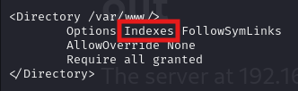

불필요한 정보 노출 삭제
- 반드시 필요한 경우가 아니라면, 서버 헤더의 제공되는 정보를 삭제하여 전송할 것
- 웹 방화벽과 같은 보안 장비를 이용하여 일괄적으로 헤더를 삭제하는 것이 가능
- 불필요한 기본 설치 파일, 백업 파일, 텍스트 파일은 모두 실제 서버에서 운용되는 환경에선 외부에 노출은 금함 (점검해줘야 함)
스캐너/크롤러 차단
- 자동화된 프로그램으로 완전하게 방어하는 것은 불가능함
- 적절한 로깅과 모니터링을 통해 어느 정도 공격 시도를 탐지하고 차단 가능
- 아파치 웹 서버 접근 로그에 기록된 요청 헤더 정보와 접속 횟수를 확인할 수 있음 (단, 정상적인 접속 내용도 포함되니 주의해서 구분)
- 침입 탐지 시스템/ 침입 방지 시스템(IDS/IPS), WAF로 자동화된 공격을 탐지하고 차단할 수 있음
디렉터리 인덱싱 설정 제거
- Indexes 옵션을 제거해야 함

이 옵션을 제거하면 디렉터리 인덱싱이 되지 않도록 설정 가능함
- IIS 서버의 경우에도 디렉터리 검색 옵션을 비활성화시켜야 함